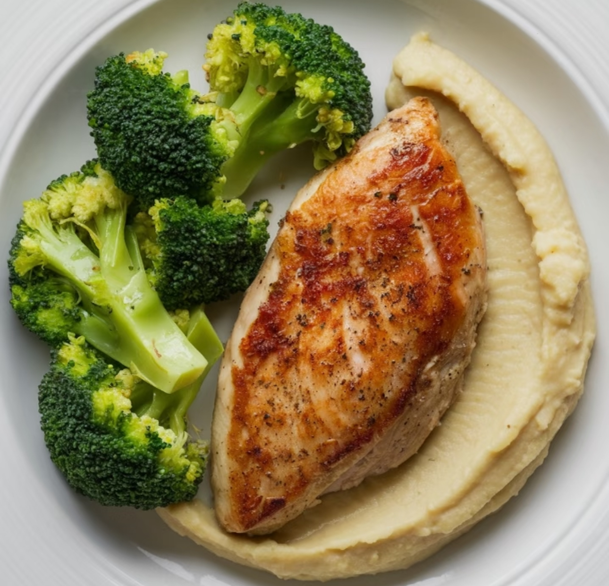
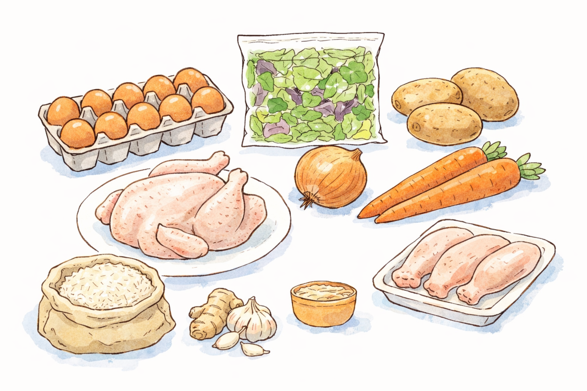
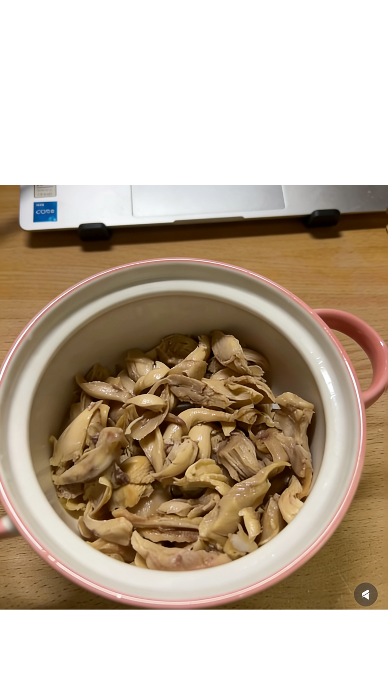
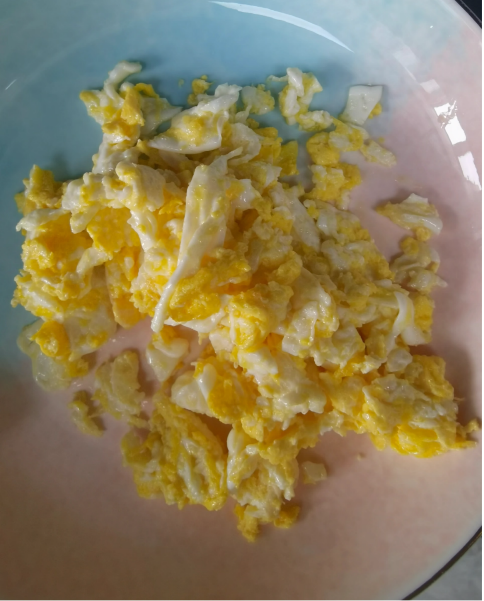
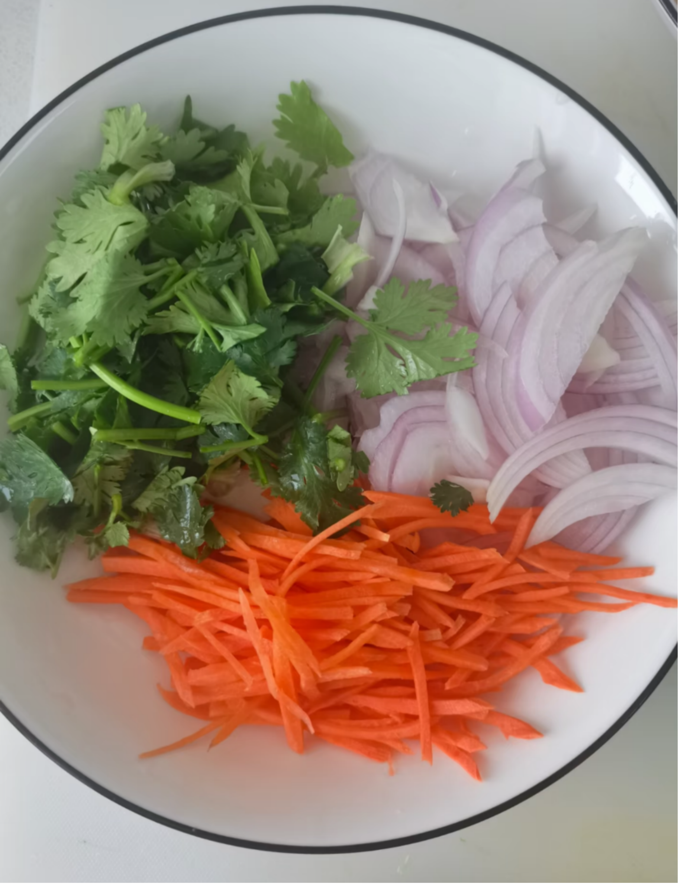
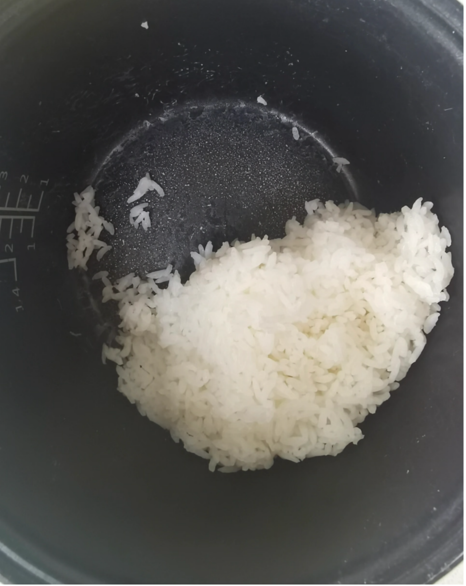
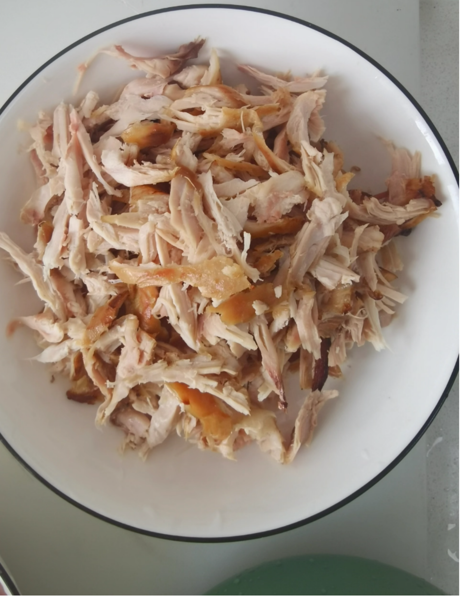
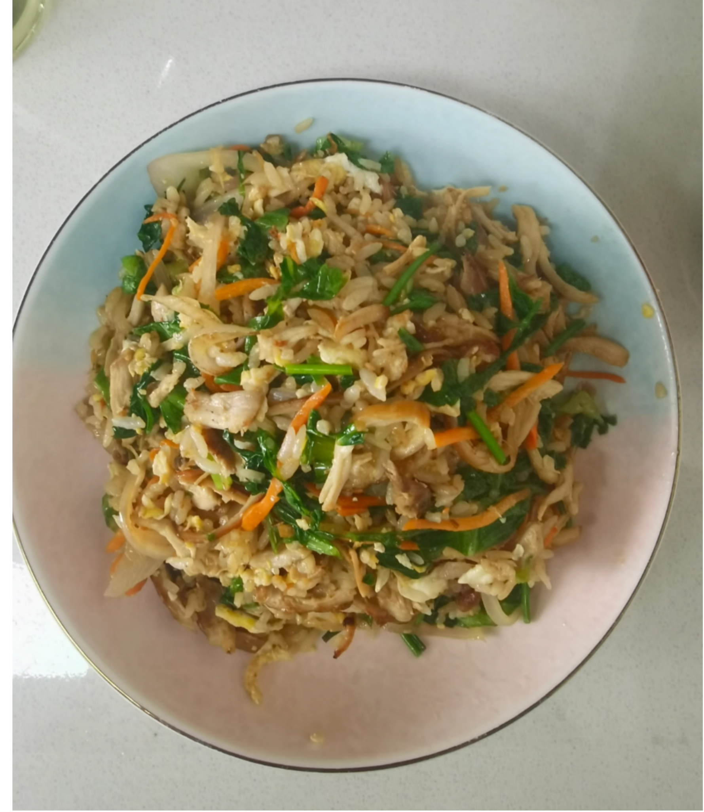

About Me
My name is Jeanne Jiang, and I am a college student who learned to cook after moving into my first apartment. Like many students living alone, I started with very limited kitchen equipment, a small budget, and almost no cooking experience.
Over the past two years, I developed simple strategies for cooking affordable meals with minimal waste. Instead of complicated recipes, I focus on practical cooking methods that work for small kitchens and busy student schedules.
This blog shares those experiences and ideas. The goal is simple: help people who live alone cook meals that are affordable, flexible, and satisfying.
My love and hatred with the three pieces of chicken breast
When I first lived alone, I did something stupid that I think of now.
It was the first weekend I moved into the apartment. I stood in front of the supermarket refrigerator, like all college students who were in house for the first time, full of fantasy of "independent life". I want to be the kind of person who prepares meals on weekends, eats healthily and lives exquisitely. So I picked up a pack of chicken breast.
Then I took another broccoli. Take another bag of potatoes.
When I checked out, I was even a little proud: Look, I'm going to buy vegetables.
You may have guessed the ending.
The first day: grilled chicken breast + boiled broccoli + mashed potatoes. Well, it's not bad. I have a sense of accomplishment when I cook by myself. I took a photo and posted it on WeChat Moments, and I got 12 likes.

The photo I posted to my WeChat Moments.
The second day: grilled chicken breast + boiled broccoli + mashed potatoes. It's okay. Anyway, it's healthy, and leftovers can't be wasted.
Day 3: Grilled chicken breast + boiled broccoli + mashed potatoes.
On the fourth night, I opened the refrigerator and looked at the remaining two pieces of chicken breast, half a broccoli that was so withered that I couldn't lift my head, and two potatoes that began to sprout - one of which was already five centimeters long, as if laughing at me.

I closed the refrigerator door and leaned against the kitchen wall, almost crying.
It's not pretentious. It's the kind of despair of "Is my life like this?" I wanted to order takeaway, but I looked at the balance ($23.47) and the delivery fee ($4.99), and silently turned off the software. I want to make something different, but I opened the Xiaohongshu and searched for "how to make chicken breast", and it came up with all - "fat-reducing meals are not repeated for a week".
Click in and have a look. What you need: rosemary, olive oil spray, air fryer, food scale, cooking machine.
I don't have any. All my kitchen utensils are a wok, a soup pot, a bowl and a pair of chopsticks. Oh, yes, there is also a bottle opener, but I have never opened the bottle.
At that moment, I thought: cooking is for the rich. I don't deserve it.
Turnaround: I found the "cheat code"
Later, I found that it was not that I was not suitable for cooking, but that I was deceived by those "correct" cooking methods.
Those exquisite recipes, perfect poses, and more than a dozen kinds of seasonings - they don't serve people of my class at all. I am an ordinary student. My need is very simple: to cook a meal that can make me happy with the least money, the most basic kitchen utensils, and the shortest time.
Besides, I don't want to eat repeated dishes anymore. The feeling of eating the same thing for three consecutive days will make people doubt the meaning of life. Really, I've tried.
So I began to think about one thing: how to make a completely different trick with the same ingredients?
I call this "the cheating method of eating more than one material".
The core logic is very simple: buy a basic ingredient and use different processing methods (cold, hot, soup, stir-fried, grilled) to make it appear in a completely different way in a week. Prepare a meal once and have a happy week. No waste, no anxiety, no bankruptcy.
Today's protagonist is: chicken.
Why did you choose chicken? Because it：
Cheap: A roast chicken in Costco costs $4.99, which is enough for four meals for one person. Raw chicken legs are cheaper, $1.99 per pound when discounted.
Easy to handle: Chicken is the most gentle meat in the world. Won't you cook it? It's okay. Add some water and boil it into soup. Don't you know how to season? It's okay. Add some soy sauce and it will be salty. No matter how much the chicken toss, it won't taste bad, which is its virtue.
The whole body is precious: chicken breast for salad, chicken leg fried rice, chicken wings directly, bones for soup, chicken skin fried in oil. A chicken died where it was, and no part was wasted.
There is another reason: I hate chicken breast. I want to take revenge on it. I'm going to eat it out.
Prepare meals on Sunday: 1 hour, in exchange for a week of calmness
Supermarket purchase list (the total cost is about $12-15, 5 meals, an average of $2.5-3 per meal):
Ingredients, why buy it, remarks：

1 roast chicken (or 3 chicken legs + 2 chicken breasts) Protagonist Roast chicken is the most trouble-free, and raw is cheaper.
1 onion, all-round seasoning, can be left for a week without spoiling.
2 carrots, nutrition + color, resistant, all-purpose side dishes
1 box of eggs (6-12 pieces), protein reserve, can also be used in the morning
Rice (or a bag of rice) is a staple food. A pot can be used for several days.
A pack of lettuce/salad vegetables, green leafy vegetables, choose bags, no need to wash
1 piece of ginger, de-fishy artifact, cut and frozen, can be put for a month
1 head of garlic, source of fragrance, same as above
3 potatoes, spare carbon water, eat before sprouting
⚠️ The core secret of living alone to save money: Don't buy things that "this recipe needs", buy things that "any recipe can be used". Onions, carrots, eggs, ginger and garlic - they can appear in any dish and will never be wasted.
Things to do after going home (concentrated processing in 1 hour)
This is the core of the whole method: use 1 hour of concentrated labor in exchange for 10-20 minutes of calmness every day for the next week.
The first step: disassemble the chicken (10 minutes)
If you buy roast chicken:
Put on gloves (or start directly) and disassemble the whole chicken.
Tear off the chicken legs and wings and eat them alone (this is your dinner on Wednesday)
Shred the chicken breast and divide it into three portions (for Monday, Tuesday and Thursday)
Don't throw away chicken bones and chicken skins! Bone soup, chicken skin fried in oil
The corner meat on the chicken skeleton is eaten while removing it - this is the legal welfare of the chef.
If you buy raw chicken legs/chicken breasts:
Score the chicken legs with a knife (make a few shallow cuts in the surface) so the seasoning can absorb better. and marinate them with soy sauce + cooking wine (you can freeze part of it)
Boil or fry the whole piece of chicken breast, and then tear it into shreds (it is not easy to tear raw)
Step 2: Prepare the dishes (15 minutes)
Shred the onion and put it in a fresh box (refrigerated for a week)
Carrots: half diced (for fried rice), half shredded (for salad)
Sliced ginger and crushed garlic (two servings each, one refrigerated and one frozen)
Potatoes: don't move yet, and then deal with them before eating (cut will oxidize and turn black)
Step 3: Cook a pot of rice (30 minutes, but don't watch)
Cook enough for 3-4 meals
If you can't finish it, divide it into small portions and freeze it.
Take out the frozen rice and heat it in the microwave, which tastes better than fresh rice (because the moisture is uniform)
Step 4: Boil a Kuaishou chicken soup (cook rice at the same time, no extra time)
Put the chicken bones in cold water and add a few slices of ginger.
After boiling, remove the foam and turn the heat to low.
Let it growl by itself, and you can do something else.
After 30 minutes, turn off the heat, filter out the clear soup, cool it and refrigerate it.
Results inspection:
Now you have in your refrigerator--
Three servings of shredded chicken (Monday salad, Tuesday steamed rice, Thursday fried rice)
Two complete chicken legs (Wednesday dinner)
A box of chicken soup base (the soul of Thursday chicken soup noodles)
Prepared onions and carrots
A pot of rice (separted)
In the next five days, you can have a different meal if you spend no more than 20 minutes a day.
Eating method 1: shredded chicken salad

(Monday dinner, 10 minutes, no need to turn on the fire)
Monday's scenario setting: You have just finished a day's class/a day's work, and you are as tired as a dog. I don't want to make a fire, I don't want to wash the pot, I just want to lie down. But you can't eat it, because you will wake up hungry in the middle of the night.
At this time, you need: this salad that will not be cooked for 10 minutes.
You need:
A portion of shredded chicken (teared when preparing the meal)
Lettuce (or any other green leafy vegetables you have, or even the cucumber left over from yesterday's takeaway)
Salad dressing (any sauce - mayonnaise, Qiandao sauce, oil and vinegar, even soy sauce + vinegar + sesame oil is completely ok)
Shredded carrots (cut when preparing meals)
Any vegetable edge that is almost in the refrigerator
How to do it:
Wash the lettuce and tear it into small pieces (don't cut it with a knife, it tastes better by hand, and wash one less tool)
Put shredded chicken, shredded carrots and other ingredients.
Drizzle the sauce and mix well.
Eat directly with a bowl and wash one less plate.
Why is this way of eating smart:
Don't open fire: Monday is the most tiring, and not fire is kind to yourself.
Clear the refrigerator: All the leftover vegetables on the weekend (half an onion, half a cucumber, three broccoli) can be thrown in.
No need to wash the pot: there is only one bowl, wash it by hand after eating.
Zero waste tips: One or two slices outside the lettuce are a little withered? Don't throw it away. If you tear it up and put it in the salad, you can't eat it at all. Don't peel the carrot skin too thickly. You can eat it after washing it.
Cost: about $2.50
Time: 10 minutes
Number of pots to wash: 0 (only one bowl is used)
Eating method 2: shredded chicken with rice

(Tuesday dinner, 15 minutes, warm the heart and stomach)
Tuesday's scenario setting: the temperature has cooled down, or you are a little homesicked. The pictures on the takeaway software look cold. You need a bowl of hot food that can warm your stomach from your stomach to your heart.
At this time, you need: this bowl of steamed rice. It is not porridge, not soup and rice, but between the two - students in the north may call it "hot rice", and students in the south may think it is "porridge".
You need:
A portion of shredded chicken
A small bowl of rice
Ginger slices (2-3 slices)
Green onion flowers (if you have it, put it down, don't pull it down)
Salt, white pepper (white pepper is the soul, if not, black pepper is also good)
Eggs? If you want to add it, you can make an egg flower.
How to do it:
Put a bowl of water in a small pot, add ginger slices, and boil.
Put in the rice and shredded chicken, and break the rice with a spoon.
Cook for 3-5 minutes so that the rice is full of soup.
Season with salt and white pepper
If you want to add egg flowers, pour in the beaten eggs before turning off the heat and stirring.
Sprinkle green onions and take them out of the pot.
Why is this way of eating smart:
Placebo for the stomach: ginger dispels cold, hot soup warms the stomach, and rice provides a sense of carbon water.
The ingredients are cooked: you don't have to worry about cooking in the whole process. You don't have to look at the pot. You can use your mobile phone while cooking.
Healing: The moment you drink it with a bowl, you will feel that "it's not so bad today"
Tips: If there are any leftover green leaves (even if they are a little withered), throw them in and scald them before coming out of the pot. The green will make people feel better. If you catch a cold, add more ginger, cover yourself with a quilt after drinking, and you will be half better the next day.
Cost: about $1.80
Time: 15 minutes
Number of pots to wash: 1 pot + 1 bowl
Eating method 3: hand-torn chicken legs + garlic puree soy sauce

(dinner on Wednesday, 15 minutes, add a chicken leg for yourself)
Wednesday's scenario setting: the hardest day of the week. There is no village in the front and no shop in the back. The weekend is still far away, and the blood on Monday has cooled down. You need a little "reward sense" and tell yourself to stick to it for two more days.
At this time, you need to add a chicken leg to yourself.
You need:
2 chicken legs (sareased when preparing the meal)
2 cloves of garlic (cut into minced garlic)
2 spoons of soy sauce
Half a spoonful of sesame oil
Chili oil? If you have it, you can add it. If you don't have it, you can add it.
How to do it:
Heat the chicken legs (if the grilled chicken is cooked, microwave it for 1 minute; if it is raw, steam it for 10 minutes or fry it)
Mix the sauce: minced garlic + soy sauce + sesame oil + chili oil, stir well

Tear the chicken legs into shreds (or chew them directly, see if you want to wash an extra bowl)
Drizzle the sauce on it, or dip it and eat it.

Why is this way of eating smart:
The psychological hint of "adding chicken legs": even if it is only heated for 1 minute, it is more ritualistic than eating shredded chicken.
The simplest seasoning is the most delicious: garlic + soy sauce + sesame oil. This combination will never turn over.
It can be disguised as a restaurant dish: sprinkle some green onions and white sesame seeds, and post it on WeChat Moments saying "homemade hand-torn chicken". No one will believe it.
Zero waste tips: If you buy raw chicken legs, oil will come out when frying. Don't pour it. Keep it for stir-frying. It's more fragrant than vegetable oil.
Cost: about $2.00
Time: 15 minutes
Number of pots to wash: 1 small bowl + chopsticks
Eating method 4: Fried rice with shredded chicken and egg
(Thursday dinner, 12 minutes, pot gas redemption)
Thursday's scenario setting: tired. But it's not time to relax completely. You need a meal with something "pot gas" to remind yourself that you are still alive and you still have energy.
At this time, you need: fried rice. And it's the kind of fried rice with soy sauce color, distinct grains and egg flavor.
You need:
A portion of shredded chicken
A bowl of rice (it's better to have overnight rice. If you don't have it, fresh rice is fine, but it needs to be cooled a little)
1 egg
Diced carrots
Diced onion
Soy sauce
cilantro (optional)
How to do it:
Beat the eggs, put oil in the pan, stir-fry and serve (don't stir-fry too old, be tender)

In the same pot, no need to wash, add diced onions and carrots, stir-fry until the onion becomes transparent.

Put in the rice, crush it with a spatula, and stir-fry it quickly.

Add shredded chicken and scrambled eggs.

Sprinkle a circle of soy sauce along the edge of the pot (the temperature of the pot is high, and the soy sauce will evaporate instantly, producing a burning fragrance)
Stir-fry quickly and evenly, sprinkle with green onions, and take it out of the pan.

Why is this way of eating smart:
The ultimate dish of clearing the refrigerator: all the remaining vegetables (mung beans, corn, broccoli stalks, leftover onions) can be diced and thrown in.
Pot gas = healing: the sound of soy sauce "shila" by the hot pot is more healing than any music.
The second life of rice: the best destination for leftovers, no one
Zero waste tips: Don't throw away broccoli stalks! Peel off the hard skin on the outside, and the core inside is crispy. Diced fried rice is especially delicious, and it tastes better than carrots.
Cost: about $2.20
Time: 12 minutes
The number of pots washed: 1 pot + 1 bowl (after frying, take the pot directly and eat, you can wash one less bowl)
Eating method 5: Chicken soup noodles

(Friday dinner, 20 minutes, weekend prelude)
Friday's scenario setting: The moment you get off work/after class, you feel that the air has become sweeter. The weekend is coming. You need a meal to celebrate, but you don't want to be too troublesome - because you have to go out to play/warew series/play games at night.
At this time, you need: a bowl of chicken soup noodles. It's faster than takeaway, more advanced than instant noodles, and cheaper than eating out.
You need:
Chicken soup base (the box boiled on Sunday)
Noodles (hanging noodles, instant noodles, udon noodles, and even instant noodles are all good)
Shredded chicken (or chicken leg)
Green vegetables (if any)
Ginger slices (2-3 slices)
Salt
How to do it:
Take the chicken soup base out of the refrigerator and pour it into the pot to boil.
Next, cook (adjust the time according to the type of noodles)
Put shredded chicken (and greens, ginger slices ) and cook for 1 minute.
Taste the salt . If it's not salty enough, add salt.
Out of the pot
Why is this way of eating smart:
Chicken soup is a cheater: the box of chicken soup made on Sunday is your savior at this moment. You don't need to boil it for two hours, and you can have a rich soup base in 5 minutes.
Sense of ceremony: hold a bowl of noodles, sit in front of the computer, and open a drama. This is the correct way to open it on Friday.
Evidence of saving money: The cost of this bowl of noodles is less than $2, but it tastes no worse than the $15 Japanese ramen.
Tips: If the noodles are cooked too much, the soup will be dried up. Solution: Boil more soup, or cook the noodles and take them out, and serve the soup separately. It looks more when taking photos.
Cost: about $1.50
Time: 20 minutes
Number of pots to wash: 1 pot + 1 bowl
Bonus eating method: chicken oil omelet + oil residue salt

(Saturday breakfast, 10 minutes)
On Saturday morning, you opened the refrigerator and found that the chicken skin was still there (left behind when you unpacked the chicken on Sunday).
At this time, you can do a very extravagant thing: fried eggs with chicken oil.
You need:
Chicken skin (chopped)
1-2 eggs
Salt
How to do it:
In a small hot pot, add the shredded chicken skin.
Fry slowly to make the chicken skin oily and turn into golden slag.
Put the oil residue aside and beat the eggs into it.
Fried eggs with chicken oil and sprinkle a little salt.
Out of the pan, sprinkle the oil residue on the eggs.
After this bite, you will understand why the French fry potatoes with duck oil. Animal fat is delicious in the world. Those who say "chicken skin should be thrown away" have not experienced real happiness.
Cost: almost 0 (what was supposed to be thrown away)
Time: 10 minutes
Happiness: bursting table
0 waste ultimate secret: those things you usually throw away can actually be eaten.
After this week, you may have some "edge material" left. This is the "Guide to the Transformation of Food for the Poor" summarized from two years of living alone:
1. Broccoli stalk
Most people only eat the flowers on it, and the stalks are thrown away directly. But the outer skin of the broccoli stalk is peeled off, and the core inside is crispy, sweet and juicy.
Shredded fried rice
Sliced as a snack dipping sauce
Marinate into pickles (cut into thin slices, salt + sugar + vinegar, marinate overnight)
2. Chicken skin
Chop it and fry it slowly over low heat to get chicken oil and oil residue.
Stir-fried with chicken oil, fried eggs, mixed noodles
Sprinkle salt on the oil residue and eat it directly, or sprinkle it on the rice and mix it with some soy sauce - this is called "poor foie gras rice"
Three. Onion head/carrot peel
Save it and put it in a frozen bag.
Throw it in when you cook the soup next time, and the soup will be sweeter.
After cooking, take it out and throw it away. The taste is already in the soup.
4. Potato skin
Wash it clean (key point!)
Mix a little oil and salt and bake in an air fryer or oven.
It's healthier than potato chips when eaten as a snack.
5. Celery leaves
Many people buy celery and only eat the stalks and throw away the leaves. But scrambled eggs with celery leaves are particularly fragrant, or mixed with salad.
6. The two layers of withered leaves on the outside of cabbage/letuce
Don't throw it away. If you tear it up and put it in the soup, or stir-fried rice, you can't eat it at all.
7. Boil noodles with water
Don't pour the water after cooking the noodles. It contains starch. Let it cool and water the flowers - plants like it.
Why did this method change my life?
In the past, I thought that cooking was a "or don't do it, or do it well". So every time I cook, I have to search for recipes, buy ingredients, and follow the steps strictly, which makes me very tired. If I fail, I don't want to do it.
Later, I found that this kind of "perfectionism" was the culprit that made me order takeaway.
Cooking doesn't need to be perfect. You don't need ten kinds of seasonings. There is no need for Michelin. All you need is a little cleverness - knowing how to make different tricks from the same ingredient.
I have used this set of "one material and more" method for two years, and I have never failed. It changed me from "I don't know what to eat when I open the refrigerator" to "open the refrigerator and start sorting". It changed me from "wasting another half a vegetable" to "I actually ate all the vegetable roots". It made me change from "ordering takeaway and spending half of my living expenses" to "only spending XXX yuan on meals every month and showing off on WeChat Moments".
More importantly, it makes me think that I can take good care of myself by myself.
Your Turn!
Now it's your turn.
What's in your refrigerator? Take photos and post them in the comment section. Let me help you think of five ways to eat it.
Half of the cabbage left yesterday? Can:
Hand-torn cabbage (stir-fried with dried chili)
Fried rice with vegetables (shredded and stir-fried with leftovers)
Vegetable salad (raw, with mayonnaise)
Baocai soup (cooked with chicken soup)
Pancakes with vegetables (shredded and fried with egg flour)
The minced pork you bought last weekend? Can:
PASTA WITH MEAT SAUCE
Steamed eggs with minced meat
Stir-fried vegetables with minced meat (with porridge artifact)
Minced meat tofu
Fried rice with minced meat
Even - instant noodles:
Cook and eat (with eggs and vegetables)
Stir-fry and eat (cook instant noodles and stir-fry with eggs and vegetables)
Mix and eat (cook, drain, add sauce and mix)
Instant noodles pancakes (pressing instant noodles and frying eggs)
Crispy noodles (directly crushed and seasoned, as a snack)
You see, once you master the way of thinking of "eating more with one material", there are no ingredients in the refrigerator that you don't know what to do.